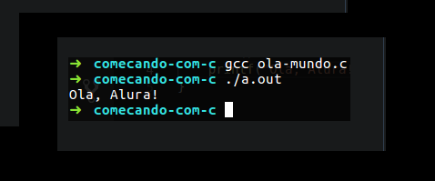

Para saber mais
O sinal de porcentagem que apareceu no final da frase, indica que naquele lugar acabou a string, isto é,
acabou a frase que passamos para o printf. Como essa instrução não tinha uma quebra de
linha, o meu **terminal inseriu **ela. Mas isso não é um comportamento padrão do programa.
O comum é que a linha não seja quebrada. Para colocar esse comportamento de quebra de linha como padrão,
precisamos falar que no final da nossa frase, o printf imprima também uma linha nova
(\n):
Quando compilamos e rodamos o arquivo, veremos que o sinal de porcentagem sumiu, pois a quebra de linha está explícita agora.
Compilação e Arquivo de Saída
Nestes casos, o compilador está nomeando nosso arquivo de saída. Mas se nós quisermos, podemos passar um
nome para o arquivo que será compilado. Basta falarmos para o compilador gerar a saída (-o)
para o arquivo ola-mundo.out, por exemplo:
Retorno da Função Main
Uma coisa que precisamos nos atentar é que quando declaramos a função main, colocamos a
palavra int antes. Essa palavra indica o tipo de retorno de uma função. Ou seja, quando
digitamos o int main(), falamos que a nossa função retorna um número inteiro. Contudo onde
indicamos esse retorno?
Em alguns compiladores, quando nós compilássemos nosso código ele geraria um aviso (Warning) falando que
a função main não tem valor de retorno. Isso não impediria o programa de rodar, mas não é
considerada uma boa prática.
Ou seja, o legal é que a nossa função main retorne um número falando que sua execução
ocorreu sem nenhum problema. Por convenção, este número é o 0. Logo, podemos falar para a
main retornar o número zero quando ela executar tudo que precisa:
C na Alura
O C é uma linguagem muito utilizada até hoje. Ela tem uma capacidade de processamento muito alta.
O Alura, possúi três cursos na linguagem. Em cada um deles você criará jogos que ajudarão a conhecer as funcionalidades da linguagem.
A Alura também tem tem um curso sobre a linguagem C na Alura Start. Nele você também conhecerá as funcionalidades da linguagem. Além do curso de C, temos cursos que te mostrarão como utilizar os recursos da linguagem em desafíos da Olimpíada Brasileira de Informática. Nele você verá como utilizar o C para criar algoritmos e se preparar para a olimpíada.
Para saber sobre a criação do site clique aqui: Criação.